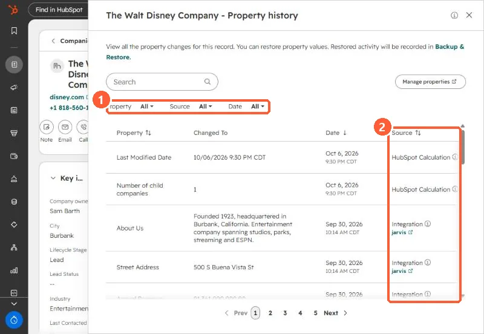
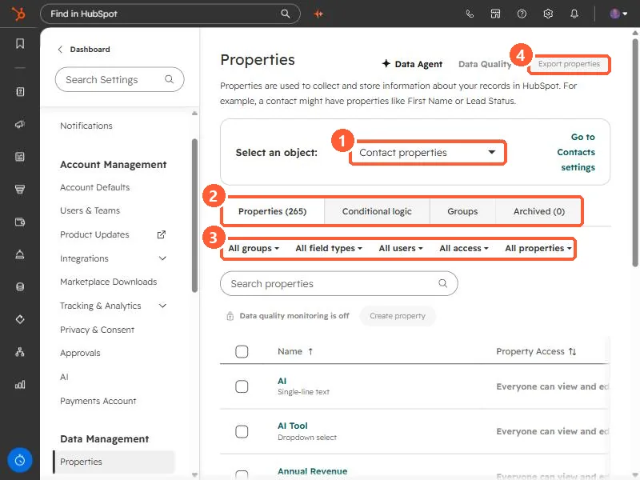

Short answer
Every property change in HubSpot is kept as history: the value, when it changed, and what changed it (an import, the API, analytics, a user, a workflow). See it on a record in the property's details, export it for many records from Settings, Properties, or read it through the API by adding propertiesWithHistory to any read. I tested the API on November 15, 2026: requests with history are capped at 50 records, half the normal 100, on both list and batch endpoints, and anything over that returns a 400.
1. On one record
Open the record, find the property (1), and open its details to see the history (2): each past value with its date and source.


This is the fastest way to answer "who changed this?" for one record. The source tells you whether it was a user, an import, an integration or a workflow. To roll a bad change back across many records, use Restore CRM changes within 14 days.
2. Export history for many records
From Settings, Properties, pick the object (1) and use Export properties (4) to export property history:


- The export only includes records that had or have a value for the property, with current and past values and when they changed.
- Dates are in UTC.
- It needs CRM Export and Object Edit All permissions.
- The number of past revisions kept is limited per object, so the oldest changes on busy properties may not be there.
3. Read history through the API
Add propertiesWithHistory with the internal names you want:
GET https://api.hubapi.com/crm/v3/objects/contacts/CONTACT_ID?propertiesWithHistory=lifecyclestage,hubspot_owner_idEach property comes back as a list of entries. In my test every entry had these four fields:
"propertiesWithHistory": {
"lifecyclestage": [
{ "value": "...", "timestamp": "...", "sourceType": "API", "sourceId": "..." }
],
"hs_analytics_source": [
{ "value": "...", "timestamp": "...", "sourceType": "ANALYTICS", "sourceId": "..." }
]
}sourceType is what changed it. In my demo portal, email and lifecycle stage showed API (they were created by a script) and the traffic source showed ANALYTICS.
4. The 50-record limit
Batch reads normally take 100 inputs and list pages return up to 100 records. With history, both are capped at 50. These are the exact errors from my test:
| Request | Result |
|---|---|
| Batch read, 50 inputs, with history | 200, 50 records |
| Batch read, 51 inputs, with history | 400: "The maximum number of inputs supported in a batch request for property histories is 50." |
List, limit=50, with history | 200, 50 records |
List, limit=100, with history | 400: "You can only request at most 50 objects in one request for properties with history." |
Batch read on /crm/objects/2026-09/contacts/batch/read, with history | 200 |
If your script pages at 100 for normal reads, drop to 50 when you add history. Pages of 50 also mean twice as many calls, so watch the rate limits.
5. What it is good for
- Finding which integration or workflow overwrote a field.
- Rebuilding values an import replaced, after the 14-day restore window has passed.
- Reporting on time in stage or ownership changes when no calculated property exists.
6. What is changing for 2027
- Dated API versions.
propertiesWithHistoryworked on the2026-09batch read endpoint in my test. Move scripts to the dated URLs, since v4 and 2025-09 become unsupported in March 2027. See API versioning. - Know your sources. When workflows, integrations and AI tools all edit the same records,
sourceTypeandsourceIdin the history are how you tell them apart.
Common questions
How do I see who changed a property?
Open the property's history on the record. Each entry shows the date and the source. Through the API, read sourceType and sourceId.
Why does my batch read fail when I add property history?
With history, batch reads accept at most 50 inputs. Split the batch.
Why are the oldest changes missing?
HubSpot limits how many revisions it keeps per property and object.
What time zone are exported dates in?
UTC.